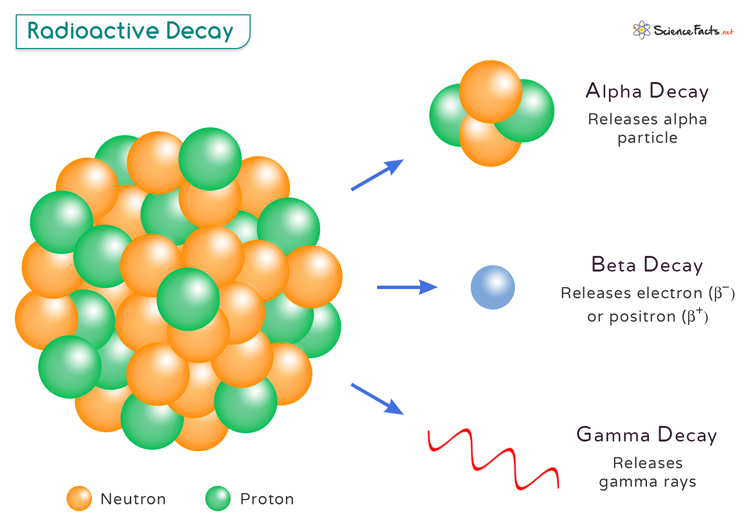
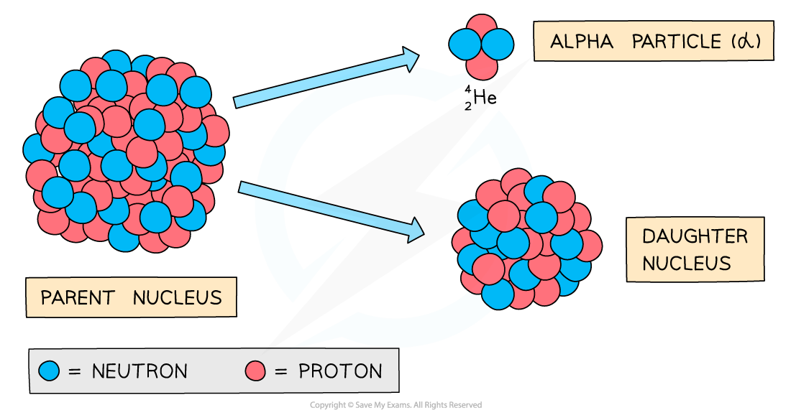
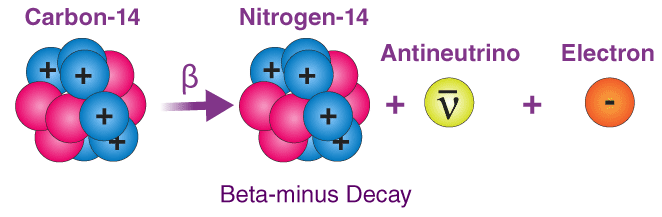
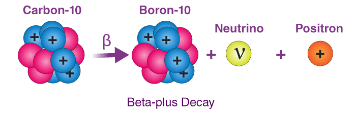

What is Radioactive Decay?
Radioactive decay is the process by which
unstable atomic nuclei release energy to
get a stable configuration. It occurs naturally in
isotopes
with an imbalance in their charge.

Types of Radioactive Decay
Alpha Decay:
Emission of alpha particles (2 protons, 2 neutrons).
Beta-Minus Decay: Converting a neutron into a proton and electron.
Beta-Plus Decay: Converting a proton into a neutron and
positron.
Alpha Decay
Alpha decay involves the emission of an
alpha particle, consisting of 2 protons
and 2 neutrons. This reduces the
mass number
by 4 and the atomic number by 2, forming
a new element two places lower on the periodic table.

Beta-Minus Decay
In beta-minus decay, a neutron converts
into a proton, which remains in the
nucleus, and an electron, emitted as a
beta particle. This process keeps the
mass number
unchanged and increases the atomic number
by 1, forming a new element higher on the table.

Beta-Plus Decay
In beta-plus decay, a proton converts
into a neutron, which remains in the
nucleus, and a
positron, emitted from the nucleus. This process keeps the
mass number
unchanged and decreases the atomic number
by 1, forming a new element lower on the table.

Proton-Neutron Stability Graph
The stability of a nucleus is determined by its position on the
proton-neutron (N-Z) graph. Stable nuclei
lie along the "stability line." Radioisotopes off this line decay to
restore balance:

-
Too many neutrons: Undergo beta-minus
decay.
-
Too many protons: Undergo beta-plus
decay.
-
High proton count (above 82): Undergo
alpha decay.
Applications of Radioactive Decay
Radioactive decay is important in fields such as:
-
Carbon Dating: You can determine the age of
ancient artifacts and fossils through using Carbon-14 and comparing it's half-life to that of the artifacts and fossils to find the date of origin unless it is too old to be carbon-dated.
-
Medicine: It's often used for treating cancer with isotopes like Cobalt-60 and Iodine-131, using these isotopes to kill cancer cells.
-
Medical Imagery: Isotopes like Technetium-99 and Fluorine-18 are used in PET and SPECT scans to diagnose diseases.
-
Energy Production: Uranium-235 and plutonium-239 undergo controlled fission reactions to generate electricity, whereas when you go into space, you need long-term useable energy i.e. Radioisotope Thermoelectric Generators or RTGs.
- Construction Flaws: Gamma rays from isotopes like iridium-192 are used to inspect welds and detect structural flaws.